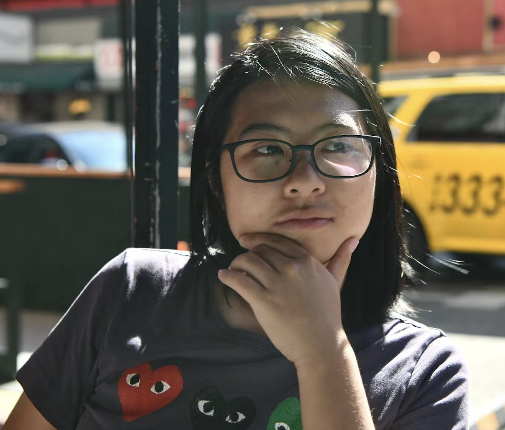

# Yuyi Li

CS PhD Student
University of California, Davis
[CV](https://drive.google.com/file/d/1U3kMEJMaBjvbVD5Ir7hYnXUCW9cXtX5S/view?usp=sharing)
[📧](mailto:nylli@ucdavis.edu)
[ ](https://github.com/Yuy1L1)
[](https://www.linkedin.com/in/vivian-yuyi-li-16b78a210/)
[](https://discuss.systems/@viv)
[
](https://github.com/Yuy1L1)
[](https://www.linkedin.com/in/vivian-yuyi-li-16b78a210/)
[](https://discuss.systems/@viv)
[ ](https://discordapp.com/users/693339908202430525)
# About Me
Hi, my name is Yuyi. I’m a first-year PhD student at [UC Davis](https://cs.ucdavis.edu/graduate),
where I’m fortunate to be advised by [Amanda Raybuck](https://web.cs.ucdavis.edu/~araybuck/). I did my undergrad at Davis as well (yes, I never left). I majored in Computer Science with a Math minor,
mostly because I liked proving things wrong using counterexamples.
My research interests include memory systems and emerging memory technologies, hardware side-channel,
and the power-efficiency trade-offs in large-scale system design.
Apart from research, I split my time between biking and playing questionable notes on my electric bass when I think no one’s listening. It’s jazz. Probably;)
I occasionally open [Project Euler](https://projecteuler.net/) just to scroll past problems I don’t understand.
If you're into math elegance (or masochism), here's [21 proofs of Euler’s formula](https://ics.uci.edu/~eppstein/junkyard/euler/) that I find interesting.
Feel free to reach out if you want to talk about systems, jazz, or jazzy systems.
# Projects
**Software Prefetcher for Tiered Memory systems**
Designing adaptive prefetching heuristics for DRAM–CXL hybrid memory systems, guided by ML workload semantics.
**CPU Print (Hardware Fingerprinting)**
Leading the ML pipeline for robust browser fingerprinting using DVFS-induced timing signatures in CPU.
**FairMem (QoS-Aware Tiered Memory)**
Optimizing DRAM–NVM allocation fairness in multi-tenant systems through dynamic page migration and latency analysis.
**gem5 GPU Simulation Library**
Created a modular GPU frontend library for gem5, enabling high-fidelity and reproducible simulation of GPU workloads.
# Teachings
- ECS 120: Undergraduate Theory of Computation. Teaching Assistant. Fall 2023
- [ECS 189G](https://github.com/ucdavis/FairMLCourse): Ethics in Machine Learning. Teaching Assistant. Spring 2023
](https://discordapp.com/users/693339908202430525)
# About Me
Hi, my name is Yuyi. I’m a first-year PhD student at [UC Davis](https://cs.ucdavis.edu/graduate),
where I’m fortunate to be advised by [Amanda Raybuck](https://web.cs.ucdavis.edu/~araybuck/). I did my undergrad at Davis as well (yes, I never left). I majored in Computer Science with a Math minor,
mostly because I liked proving things wrong using counterexamples.
My research interests include memory systems and emerging memory technologies, hardware side-channel,
and the power-efficiency trade-offs in large-scale system design.
Apart from research, I split my time between biking and playing questionable notes on my electric bass when I think no one’s listening. It’s jazz. Probably;)
I occasionally open [Project Euler](https://projecteuler.net/) just to scroll past problems I don’t understand.
If you're into math elegance (or masochism), here's [21 proofs of Euler’s formula](https://ics.uci.edu/~eppstein/junkyard/euler/) that I find interesting.
Feel free to reach out if you want to talk about systems, jazz, or jazzy systems.
# Projects
**Software Prefetcher for Tiered Memory systems**
Designing adaptive prefetching heuristics for DRAM–CXL hybrid memory systems, guided by ML workload semantics.
**CPU Print (Hardware Fingerprinting)**
Leading the ML pipeline for robust browser fingerprinting using DVFS-induced timing signatures in CPU.
**FairMem (QoS-Aware Tiered Memory)**
Optimizing DRAM–NVM allocation fairness in multi-tenant systems through dynamic page migration and latency analysis.
**gem5 GPU Simulation Library**
Created a modular GPU frontend library for gem5, enabling high-fidelity and reproducible simulation of GPU workloads.
# Teachings
- ECS 120: Undergraduate Theory of Computation. Teaching Assistant. Fall 2023
- [ECS 189G](https://github.com/ucdavis/FairMLCourse): Ethics in Machine Learning. Teaching Assistant. Spring 2023